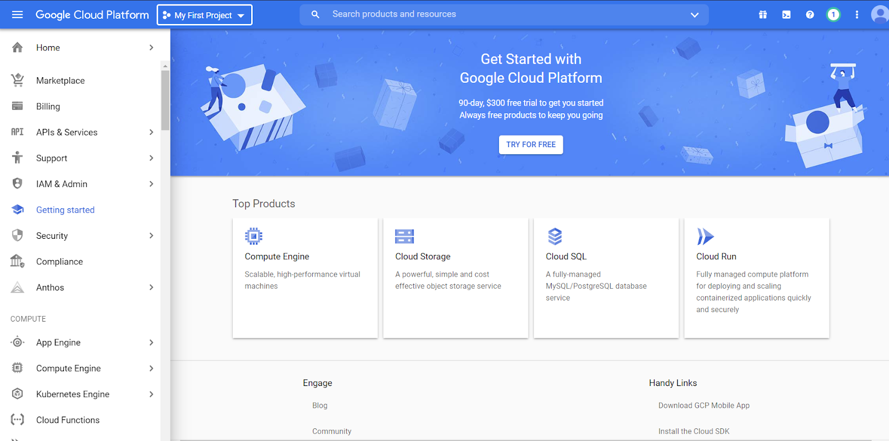
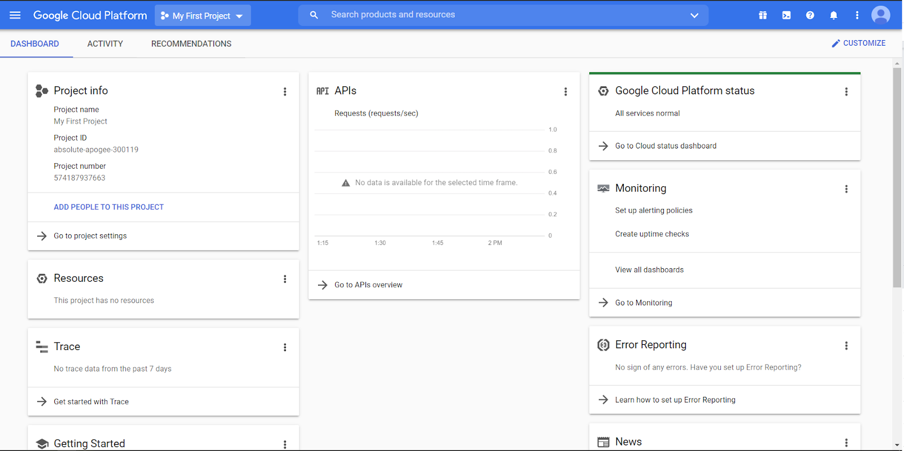
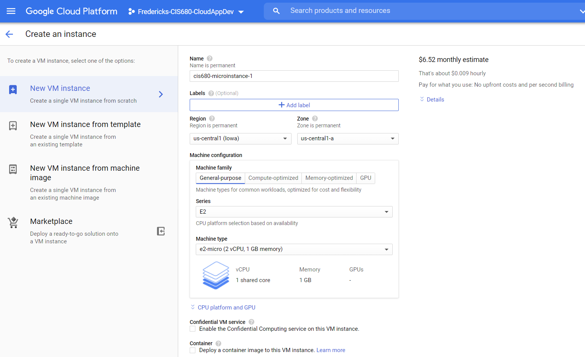
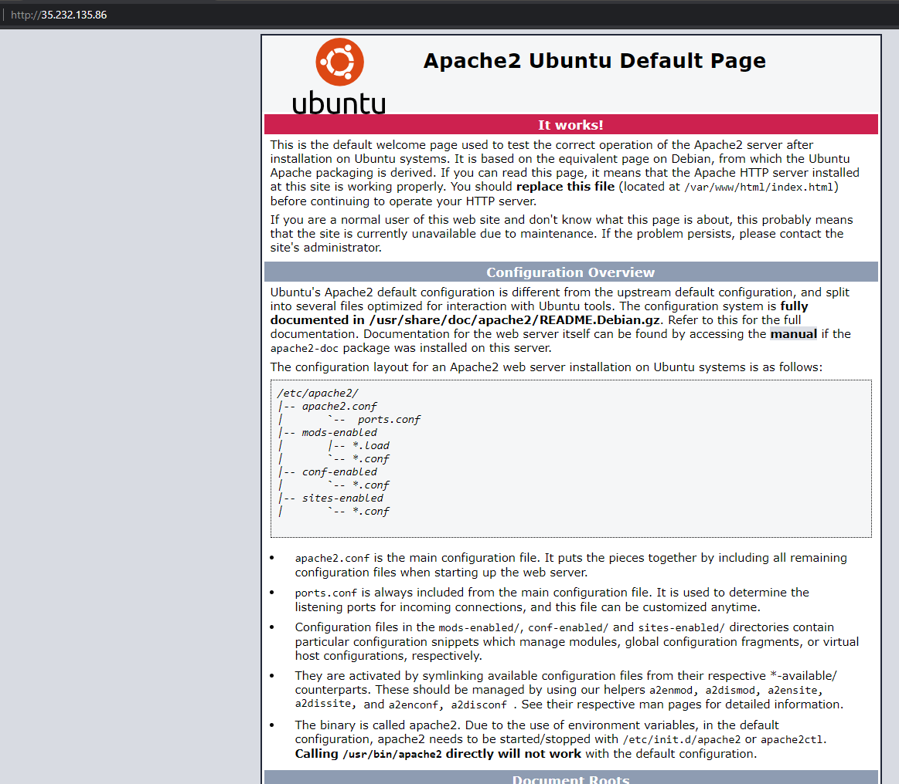

Try to answer the question, "Why does this codelab exist?" This should be one sentence.
Prerequisites
To perform this codelab, you must have:
- A Google email address (either your GVSU Google email account or a personal Gmail account.
- A Google Cloud coupon sent by the instructor (or, if you are not from GVSU, a free-tier Google Cloud account).
What you'll do
- Create a Google Cloud account
- Setup a billing account and project
- Create a free-tier virtual machine that you can always leave on
What you'll need
- Up-to-date browser
- Working internet connection
For this lab we are going to work with Google Cloud to setup your account, a billing account, a project, and a micro-instance of a virtual machine.
As this is your first lab with me, and I'm not physically there to walk you through this, please read this manual carefully and follow along. There will be homework questions seeded throughout this document asking you to take a screenshot here or there, report information, etc., and you won't be able to go back to it without starting over.
To nip the question in the bud, yes, you must provide an answer to all questions. If you missed a step, then that is on you to fix. Again, read carefully.
You can create as many VMs as you want, but keep in mind that your account will be charged for each moment a VM is online. Note that you should never put your personal credit card information into the site. This is 100% free for you.
The reason we're using a micro-instance is that it is free to your account, as long as you don't send/receive too much data. More info here on that: http://cloud.google.com/free.
Coupon Setup
You should have received an email forwarded from myself containing information for signing up for Google Cloud. Your GVSU Google email is required for the first form, as that will send you the coupon.
The second email you get will be a coupon code to redeem. Ensure that the account you are logged in as (top right corner) matches the email address you're redeeming from.

Accept the agreement and continue. You should now have $50 in your Google Cloud account.
If you see a 'Your free trial is waiting' banner at the top, click 'Dismiss' as we don't want to use that. You have free credits as part of the course. Once you are done with the class feel free to use those!
Congrats, your account is setup.
You should have a screen that looks similar to this screenshot:

There are a few things to notice here. The panel on the left lists out *all* of the Google Cloud products you can work with.
Note that the majority are not activated! This means that, if you want to use one, you first need to Enable it.
This preference helps both with keeping costs down and security up.
The panel on top has a few key points to become intimately familiar with.

First, the drop down with 'My First Project' lists out all the Projects associated with your account. 'My First Project' is automatically created for you when your billing account is created. You can create more projects as you desire, however they must be linked to a billing account. Meaning, each time *something* happens on your project, it is charged to a billing account.
The next object is the search bar. This enables you to quickly find *anything* within Google Cloud and should be your first stop if you don't know where something is.
The >_ button activates Cloud Shell. We will cover this in another module, but it is essentially a Linux shell for interacting with Google Cloud.
The circular button next to it with a 1 inside is the list of current notifications. Refer to it whenever you do something, as it will communicate the server status to you. If you click it now, you will probably see a notification that 'My First Project' was created.

If it is spinning, then Google is working in the background. You can click it for more information.
View Billing Information
In the left panel, click 'Billing' (or search for Billing). This will bring you to your account overview and tell you how much money you have left in your account.
AS A REMINDER, NEVER PUT YOUR CREDIT CARD IN. IF YOU RUN OUT OF CREDITS CONTACT ME AND I WILL SEND YOU ANOTHER COUPON.
(Non-GVSU students, you're on your own).
You should see something like this in the bottom-right corner:

Let's change the default project to be something easier to remember. If you click the Google Cloud Platform logo on the top left you'll go back to the homepage. It will look different to what you originally saw, however this is the screen you'll see most often from here on out:

Click 'Go to project settings' (or again, search for project settings).
Rename the project name to <YourLastName>-CIS680-CloudAppDev
It should look like this when you're done:

You'll also notice that your project updated in the drop-down in the top bar. Nice!
Now, let's create a virtual machine (VM). If you are not familiar with VMs, consider them to essentially be remote computers that you can access (refer to the course material for more detail).
Let's create a Linux (Ubuntu) microinstance that you can leave running indefinitely.
The reason why it is free is that it falls under the 'Free Tier products' category to enable people to try out these products without worrying about paying for it. See https://cloud.google.com/free for specifics.

Ok, let's do some real work! Go to the Compute Engine page (left menu, search for it, etc.). You'll see something like this:

Again, services are not enabled until you want to use them. Let Google initialize the Compute Engine and then click 'Create.'
ou'll be taken to the VM creation page. Name it cis680-microinstance-1 (this name can be up to you, but it is helpful to name it as related to its task -- if you get a non-unique name error than add on your last name to it). The region and zone should be us-east as that is closest to you, but note all the different regions you can create a VM on.
Now, play with machine type a bit, noting the changes in cost on the right. If you want a beefy machine, then you're going to pay a lot for it. We're going to go for the smaller model, because again, it is free.
We're also going to use Ubuntu 20.04 LTS. If you pick Minimal by accident you'll notice things are ... minimized. Meaning, the VM will be missing many common commands (you can unminimize later on if you want). Set the hard drive space to be 30GB.
Your screens should look like this:



Note at the bottom are REST/command line links. You can use these to automate VM creation in the future, if you wish. Think of then as analogous to the Powershell commands generated by Windows Server when you use the GUI.
The VM instance creation will take a few minutes. You should see something like this when it is done:

Things to note:
- Green checkmark: the VM is on and running
- Internal IP: the IP address set to the machine that can be used inside Google Cloud. Generally, this IP address will not change by itself.
- External IP: the IP address that is globally visible. It will change over time unless you pay for a dedicated IP address.
- SSH: the button you can use to connect remotely to the VM (it launches a browser-based terminal session).
- Note: if you wanted a Windows VM (and are prepared to pay for it), this would set you up with a Remote Desktop connection)
Time to do the most basic of VM activities: host a website. Click the SSH button and get excited about using Linux. If you're not familiar with Linux, don't worry, I'll give you the commands you need.
You'll now see a screen like this:

The $ delimits where you type. The gear icon in the top right corner is useful for settings, uploading, and downloading files. Check out the other options available there as well. For now, let's get that website going. We're going to install Apache.
Apache Installation
This part is easy! Type the following into the terminal:
sudo apt install apache2
This command is broken down as follows:
sudo: Use the administrator account to do somethingapt: Use the aptitude application to manage programsinstall: Tell aptitude to install somethingapache2: The something you install, here, the Apache web server + dependencies
We also want it to run when we inevitably restart the machine, so type this in as well:
sudo systemctl enable apache2
systemctl is a program for managing services (daemons) and enable tells the VM to run the target program at startup.
Now, open up a new browser tab and put in your External IP address. You should see a screen like this.

Congrats, you're now the proud owner of a web server.
If you are having trouble accessing your website, ensure the url starts with http and not https! We haven't set up an SSL (secure socket layer) connection on our websites.
Note: if you are a non-GVSU student don't do this, as I won't accept your request.
Time to give me permission to access your account! This will enable me to give you support as you go, otherwise I won't be able to see what you're doing. Effectively, you're giving me permission to also manage your Google Cloud projects.
Be very careful granting this power to others. In general, you should only give as much access as the user needs. In this case, I need all the power to help you.
Go to the IAM page (search, sidebar, etc.) and click '+Add' at the top. Add my email address and give me the role of Project → Owner. I've obfuscated my email for posterity, however simply use my @gvsu.edu email address.

Note: if you don't do this step, I can't help you!
All done! Ensure you've saved the necessary screenshots, answered questions, and submit your assignment to Blackboard!
Learn more
Interested in more? Check out the range of cloud services available: https://cloud.google.com/products